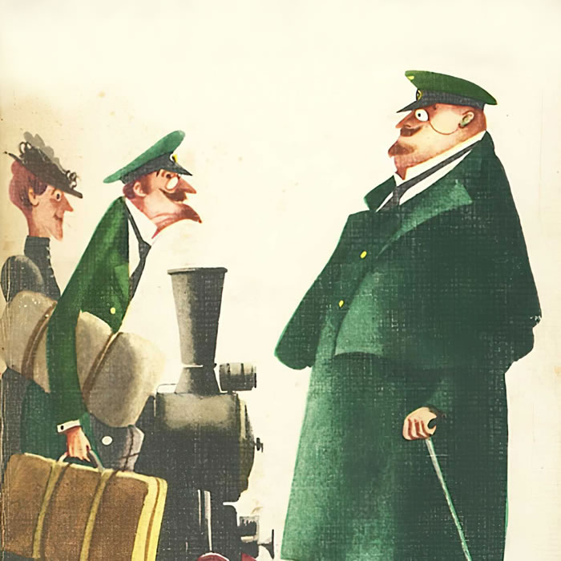

Сатирический рассказ русского писателя Антона Павловича Чехова,
написанный в 1883 году. Впервые был опубликован юмористическим журналом
«Осколки» 1 октября 1883 года.

Иллюстрация к рассказу.
Краткое содержание
Два товарища, толстый и тонкий,
встретились через много лет после окончания гимназии. Выяснив,
что у толстого чин выше, тонкий не смог победить укоренившееся в нём
чинопочитание и потерял друга.